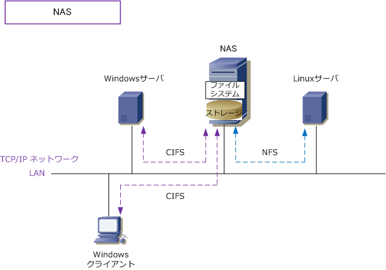

NAS ( Network Attached Storage )
NASとは
NAS（Network Attached Storage）は「ハードディスク、LANインターフェース、簡易OS」などにより 構成される、いわばファイルサーバ専用機です。あるいは、ネットワークストレージそのものを指します。 NASは、イーサネットLAN上のTCP/IPネットワークで通信するため、NASにIPアドレスを割り振ります。 NASは一般的にCIFS、AFP、NFSのファイル共有プロトコルをサポートしておりファイル共有ができます。
| 主なファイル共有プロトコル | 説明 |
|---|---|
| CIFS ( Common Internet File System ) | Windows OSで利用するファイル共有プロトコル |
| AFP ( Apple Filing Protocol ) | Mac OSで利用するファイル共有プロトコル |
| NFS ( Network File System ) | Unix/Linux OSで利用するファイル共有プロトコル |

NASでは、ファイルシステムを採用してファイル管理を行うため、当然ファイル単位でバックアップできます。 NASでは例えばWindowsのサーバのように、あるクライアントがNASにあるファイルを編集している状態で 他のクライアントがアクセスしてくると、現在編集中である旨が伝えられ編集がロックされます（編集不可）。 ※ NASの利用IDとコンピュータのログインIDが同じである必要はなく、NASの利用IDによりファイルへのアクセス権が決まります。
SANとNASの違い
SANもNASも、ストレージ装置をネットワーク経由で利用する仕組みであることは共通しているのですが、 NASではファイルシステムを介することでストレージ装置を利用できますが、SANではファイルシステム を介することなくストレージ装置を利用できます。この違いで処理速度がSANの方がかなり早くなります。 以下はSANとNASの違いの比較表です。なお、SANには「FC-SANとIP-SAN」の大きく2種類があります。
| 項目 | SAN | NAS |
|---|---|---|
| ネットワーク | FC-SAN ( ファイバチャネルネットワーク） IP-SAN ( TCP/IPネットワーク ) |
TCP/IPネットワーク |
| プロトコル | FC-SAN ( ファイバチャネルプロトコル） IP-SAN ( iSCSI、FCIP、iFCP ) |
CIFS/NFS/AFP等のファイル共有プロトコル |
| ストレージへのアクセス方式 | ローデバイス（ファイルシステムを介さない） | ファイルシステム |
| ゾーニング | 可 | 不可 |
| コスト | △ （高価格） | ◎ （低価格） |
| パフォーマンス | ◎ （高いパフォーマンス） | △ （低いパフォーマンス） |
| 運用性/保守性 | △ （複雑） | ◎ （容易） |
企業ネットワークでは、一般的にSANによりネットワークストレージのシステム構成することがほとんど。 SAN ( Storage Area Network ) については「SANとは、FC-SAN と IP-SANの違い」をご参考ください。